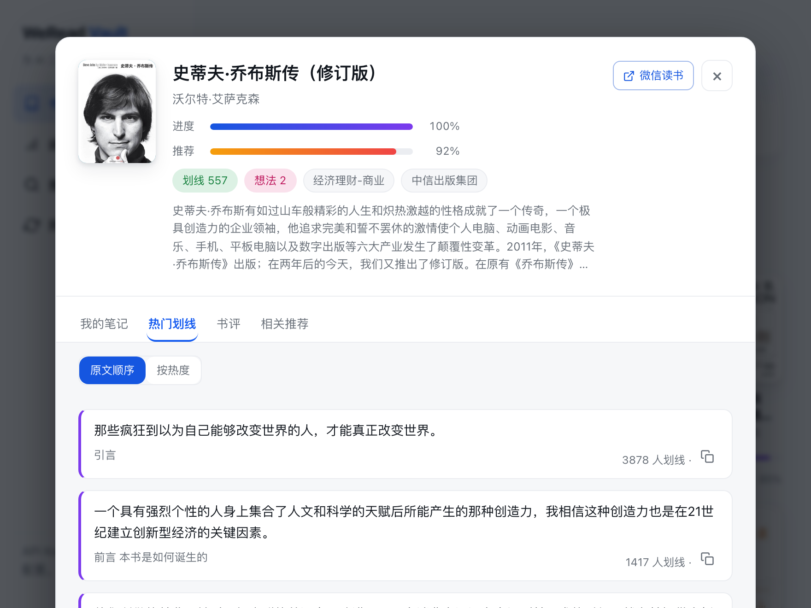
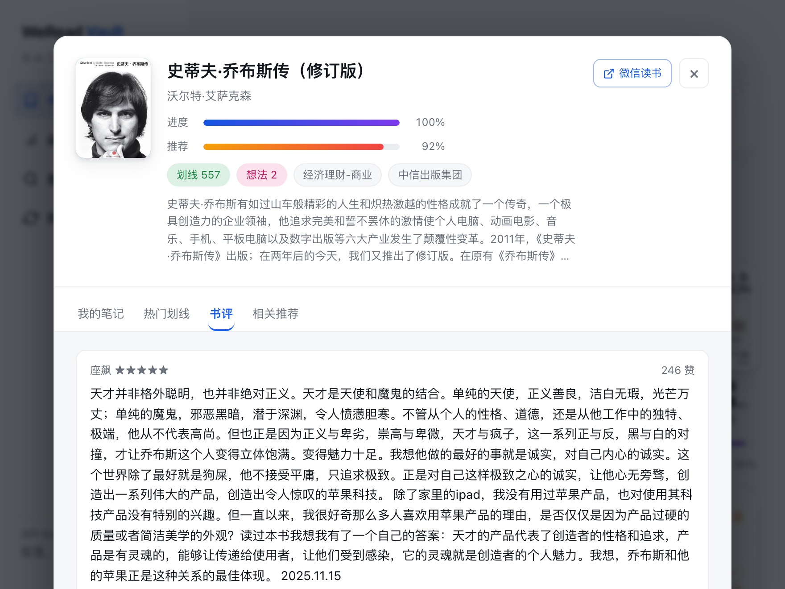
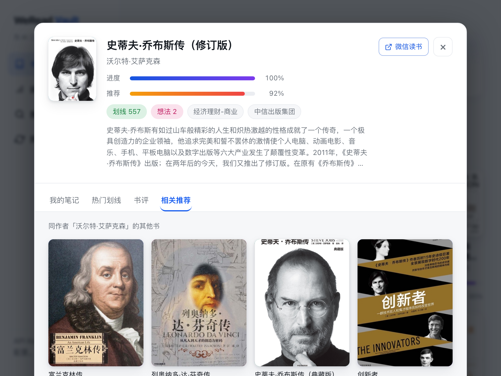
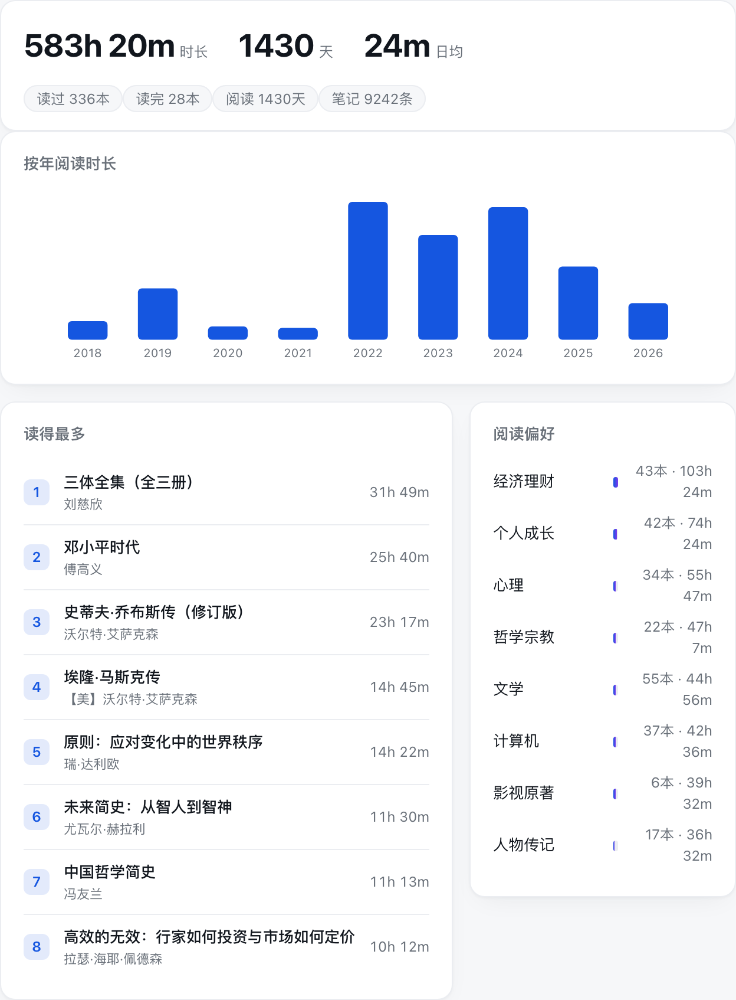
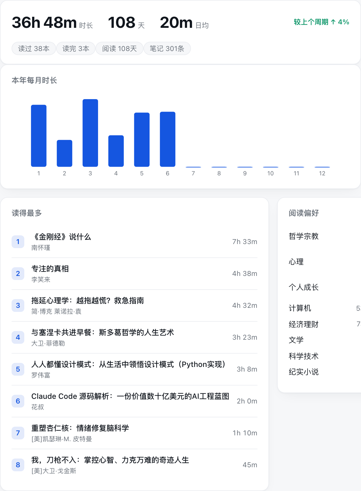
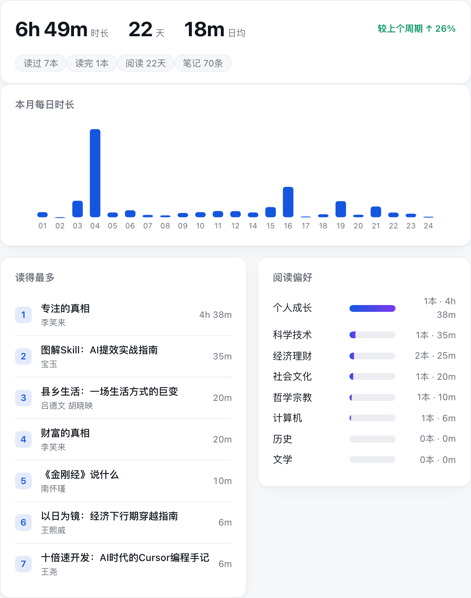
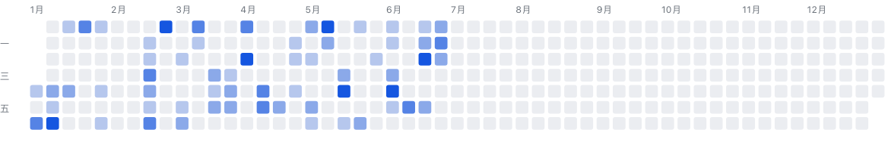

WeRead Vault
微信读书的本地数据库，一个带 Agent Skill 的 CLI。
把书架、划线、想法、阅读统计归档进本机 SQLite —— 可查询、可视化、可导出，AI 直接读，数据不上传。
个人数据归档工具，不是官方客户端，只同步你自己的数据。

微信读书的本地数据库，一个带 Agent Skill 的 CLI。
把书架、划线、想法、阅读统计归档进本机 SQLite —— 可查询、可视化、可导出，AI 直接读，数据不上传。
个人数据归档工具，不是官方客户端，只同步你自己的数据。
下载即用，无需 git clone。
习惯命令行？一行启动（需 Python 3.10+）：
uvx weread-vault serve --open请用 pipx 安装并运行 WeRead Vault：
pipx install weread-vault && weread-vault serve --open
打开网页后提醒我去 https://weread.qq.com/r/weread-skills 获取微信读书 API Key，
我在网页里粘贴同步。数据只存我本机，别把 key 写进任何文件。
数据只存本机一个 SQLite 文件，可备份、迁移、离线，永不上传；网页只监听 127.0.0.1。
同步整个书架（800+ 本，含无笔记的书与公众号分组）。
周/月/年/全部切换、同比、读得最多、偏好分类、时段、GitHub 式热力图、碎片化结论。
看「大家都在划的句子」和公开书评，搜书城，看同作者的相关书。
CLI 暴露整套微信读书 API + 只读 SQL + 统计 JSON，可交给 Claude Code / Codex / OpenClaw。
Markdown（含封面、合并他人热门划线去重）、Obsidian、flomo、Notion。
我的笔记 · 热门划线 · 书评 · 相关推荐



按周 / 月 / 年 / 全部切换，所有数字随之变化



